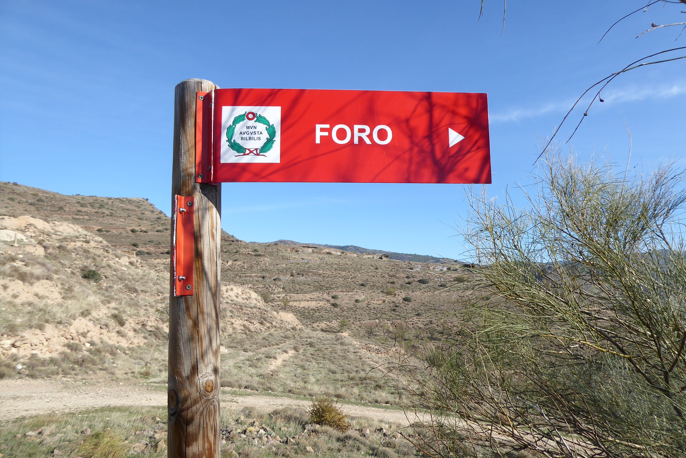

¿Dónde esta Bilbilis?
Bilbilis está situada sobre la colina de Bámbola, a orillas del río Jalón, en la localidad de Huérmeda, a escasos kilómetros de Calatayud.

Bílbilis fue una ciudad prerromana y romana de la península ibérica que se encuentra a escasos kilómetros de Calatayud (Zaragoza) ciudad que le debe el gentilicio, pues los habitantes de Calatayud son bilbilitanos. En el siglo III aparece relacionada en el Itinerario Antonino A-24 y en el Itinerario Antonino A-25 encabezado con el título de Alio itinere ab Emerita Cesaragustam 369 que significa Otro camino de Mérida a Zaragoza, 369 millas, entre las plazas de Aquae Bilbilitanorum y Nertobriga (Tarraconense).
Inicio

Vemos el camino que hay que recorrer hasta llegar a las ciudad. Habrá sobre 1 Km de distancia desde donde se deja el coche, hasta llegar a las ruinas. Si que hay un pequeño aparcamiento, pero cuando estuvimos nosotros no estaba habilitado.

Al llegar al yacimiento hay dos opciones, seguir por la carretera por la derecha o adentrarse en las ruinas por la izquierda. Si escogemos la primera opcion, llegaremos arriba de la colina donde se ubicaba el antiguo foro.
InicioForo
El Foro de Bilbilis se edificó, al igual que el teatro, dentro de un costoso programa de monumentalización de la ciudad. convirtiéndose en el elemento central de su vida cívica. Inagurado hacia el 27 d.C. durante el reinado de Tiberio, sufrió modificaciones en época flavia y antonina, comenzando su declive en el siglo III, cuando es despojado de sus mármoles, calcinadas sus esculturas y transformados los edificios en almacenes y viviendas. En los siglos XII-XII sus ruinas fueron reocupadas por un pequeño poblado medieval que aprovechó el criptopórtico para alojar una pequeña iglesia junto a la que se situaba una necrópolis. Posteriormente, templo, basílica, curia y pórticos, fueron expoliados para emplear sus materiales en la construcción de iglesias, conventos y palacios en Calatayud
Inicio
Termas
Se sitúan dentro de la ciudad y corresponden a un modelo provincial, de distribución lineal y simple, asentadas en una ladera, y rodeadas por varias cisternas que las abastecían de agua. Las salas de estas termas con su abastecimiento de agua y calefacción, sus lugares para dejar la ropa y las pertenencias personales, las piscinas de agua caliente y fría, una schola labrum junto al caldarium, letrinas y otras dependencias estaban decoradas con conjuntos pictóricos de gran calidad, realizados por un equipo de pictores itálicos que recorrieron varios lugares del Valle del Ebro, Bílbilis, Arcóbriga, etc. Varios de los frescos que decoraban las termas pueden ser vistos en el Museo de Calatayud.
Apodyterium
Cumplía la función de vestuario. Era una habitación próxima al pórtico de entrada donde los bañistas dejaban sus ropas. Había un banco corrido y en la pared unas hornacinas sin puertas, donde se depositaban las ropas y los objetos personales, que quedaban vigilados por un esclavo
Caldarium
Era la sala del agua caliente, equipada con un hipocausto que transportaba el aire caliente de una chimenea hasta el subsuelo. Los bañistas podían meterse en las piscinas de agua caliente (alveus) y echarse agua en el cuerpo (labra). Las termas imperiales solían situar el caldarium en el centro para dar calor a todas las estancias
Frigidarium
Ea la sala destinada a los baños de agua fría. En las grandes termas el frigidarium estaba descubierto e incluía entre sus instalaciones una gran piscina donde poder practicar natación
Tepidarium
Era la habitación de temperatura templada. El hipocausto no estaba conectado directamente, sino que el tepidarium se ubicaba junto al caldarium. Solía ser una estancia de transición entre la sala caliente y fría para evitar un cambio brusco de temperatura.
Laconicum
Era la sala de vapor.
Inicio
Teatro
El teatro forma un todo único con el foro al que está vinculado por una serie de pórticos y pasillos de comunicación, iniciándose su construcción al mismo tiempo que el mismo. Presenta una escena de dos pisos con capiteles corintios en ambos, y tres valvae y aprovecha las vertientes naturales, rellenando las zonas deprimidas y tallando de forma escalonada la roca en las zonas prominentes.
Hay que concebirlo como un edificio de espectáculos con carácter comarcal, ya que su capacidad, cercana a los 4500 espectadores, excede con mucho las necesidades de la pequeña ciudad. x